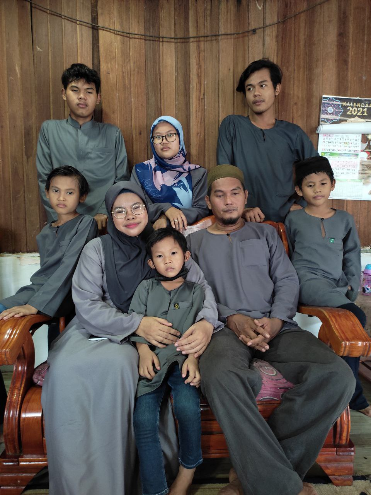

My mother was 46 years old and she was born on 7th July 1978, meanwhile my father was born on
22nd August 1974 as he was 50 years old this year. They got married when my mom was 21 years old
at Klang, Selangor. A year after their marriage, they were blessed with my elder brother.
Three years after that, i was born as the second child and the only daughter of seventh siblings.
My first brother was 24 years old and he's currently working as an operator at one of the factories
near my house. As for my other younger brothers, they are 19 years old, 17 years old, 13 years old,
11 years old and the last one was 9 years old.
My eldest brother named Muhammad Aiman, meanwhile my other younger brothers named Muhammad Ammar,
Muhammad Amri, Muhammad Azri, Muhammad Ashraff, Muhammad Fitri. All of them mostly have my fathers
face, however, im the only one who looks like my mother as we resembles each other very much that
people tend to think we are siblings, haha funny right?! However, i have my father`s attitude.
Last year, my father and my siblings working hard to built our new home as it is our first time
experiencing new knowledge on how to built a better house for a family. Furthermore, we spent time
together and help each other so that we could move in quickly and stop paying for the rental house
rent every month. All we need is to pay for the water, electricity, and also WIFI bills. In addition,
our new home more near with my grandmother`s house. I always sleepover there to spend time with my
grandparents often.